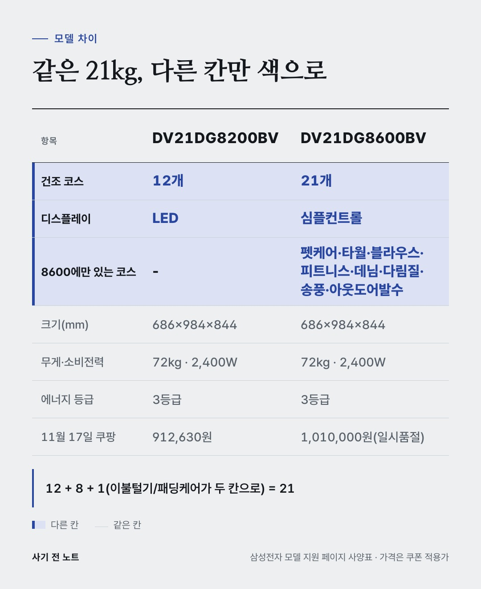
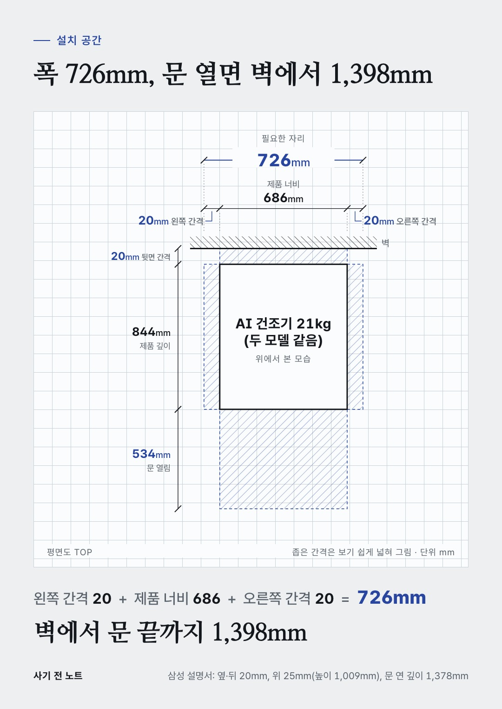

이 게시물은 쿠팡 파트너스 활동의 일환으로, 이에 따른 일정액의 수수료를 제공받습니다.
삼성 건조기 DV21DG8200BV 8600BV 차이, 코스 12개와 21개
표준·이불·셔츠 코스로 충분한 집이라면 삼성 AI 건조기 21kg은 DV21DG8200BV면 됩니다. 8600BV와 용량·크기·소비전력·에너지 등급이 모두 같고, 삼성 사양표에서 다른 칸은 디스플레이와 건조 코스 수 두 개뿐이거든요. 11월 17일 쿠팡 쿠폰 적용가 기준 둘의 차이는 97,370원. 같은 21kg 건조기를 그만큼 덜 내고 들이는 셈입니다.
기본 코스면 되는 집, DV21DG8200BV(11월 17일 쿠팡 912,630원, 삼성전자 브랜드샵)

97,370원으로 늘어나는 건 코스 이름

8600BV에만 있는 코스는 펫케어건조·타월·블라우스·피트니스·데님·다림질건조·송풍건조·아웃도어발수케어 8개. 8200의 '이불털기/패딩케어'가 두 칸으로 나뉘면서 12 + 8 + 1 = 21이 됩니다. 디스플레이는 8200이 LED, 8600이 '심플컨트롤'이고요.
반려동물 방석이나 등산복을 따로 돌릴 집이라면 이 차이가 값을 합니다. 설명서 기준 펫케어 건조는 한 번에 1.5kg까지, 펫 이불·방석은 두께 4cm 이하를 권해요. 다만 11월 17일 쿠팡에서 8600BV는 일시품절이었습니다.
펫케어·데님·발수 코스까지 쓸 집, DV21DG8600BV(11월 17일 쿠팡 1,010,000원, 이날 일시품절)
세탁실 폭 726mm, 문 앞은 1.4m

두 모델은 설명서 규격 그림과 벽 간격까지 같아서 자리 계산도 하나입니다. 본체 686×984×844mm에 옆 20mm·위 25mm·뒤 20mm를 더하면 폭 726, 높이 1,009, 깊이 864mm. 문을 끝까지 열면 벽에서 1,398mm가 비어 있어야 하고, 설명서는 문을 완전히 열 수 없는 자리엔 설치하지 말라고 적었죠.
전원은 16A 이상 접지 콘센트를 건조기 혼자 써야 합니다. 멀티탭·연장선은 설명서가 금지. 세탁기 위에 올릴 계획이면 맞는 상단 설치 키트 모델명을 주문 전에 판매처에 물어보세요.
3등급이라 한전 지원은 빼고 계산
삼성닷컴은 10월 1일 등급 기준 강화로 이 건조기들이 3등급이 됐고, 제조일에 따라 1등급 라벨 재고가 섞여 올 수 있다고 안내합니다. 한전 고효율 가전 구매비 지원(복지할인 가구 15~30%)은 의류건조기라면 1등급만 대상이라, 두 모델 다 지원 없는 가격으로 비교하는 게 맞아요. 1등급 라벨 재고까지 인정되는지는 한전 지원사업 홈페이지 모델 목록이 기준입니다.
이불 건조가 구매 이유라면 하나 더. 상품 페이지는 4kg 이내 이불 건조를 안내하지만, 설명서는 오리털·거위털·양모·목화솜 충전재 이불은 건조하지 말라고 합니다.
KC 안전인증은 쿠팡 표기 HE07020-22161E로, 11월 17일 제품안전정보센터 조회에서 적합이었어요. 삼성 자료를 옮긴 글이라 어느 쪽도 써 본 경험은 없습니다. 남는 질문은 하나, 집에서 따로 돌릴 코스가 97,370원어치 있는가.
숫자를 가져온 곳
- 삼성전자 DV21DG8200BV 모델 지원 페이지(사양표): https://www.samsung.com/sec/support/model/DV21DG8200BV/
- 삼성전자 DV21DG8600BV 모델 지원 페이지(사양표): https://www.samsung.com/sec/support/model/DV21DG8600BV/
- DG8200 사용 설명서: https://downloadcenter.samsung.com/content/UM/202610/20261013140307421/WM0041_IB_DV8000DK_KO_261006.pdf
- DG8600 사용 설명서: https://downloadcenter.samsung.com/content/UM/202610/20261013140642299/OID83345_IB_DV8000DK_SimpleUX_KO_261006.pdf
- 삼성닷컴 DV21DG8200BV 상품 페이지(등급 안내·설치): https://www.samsung.com/sec/dryers/dryer-dv21dg8200bv-d2c/DV21DG8200BV/
- 삼성닷컴 DV21DG8600BV 상품 페이지: https://www.samsung.com/sec/dryers/dryer-dv21dg8600bv-d2c/DV21DG8600BV/
- 비건뉴스 한전 고효율 가전 지원 보도(7월 17일): https://www.vegannews.co.kr/news/article.html?no=384116
- 제품안전정보센터 KC 인증 조회: https://www.safetykorea.kr/release/certDetail?certNum=HE07020-22161E
#삼성건조기 #삼성건조기21kg #DV21DG8600BV #DV21DG8200BV #건조기직렬설치